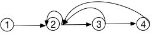

☰ 目录
023 求重要城市的数量
链接和考点
| 栏目 |
详细 |
| 腾讯编程测试 |
2018.09.15 |
| 考点 |
graph, tree |
| 难度 |
Medi |
题意
小Q所在王国的n个城市， 城市之间有m条单向道路连接起来。
对于一个城市v， 从城市v出发可以到达的城市数量为x， 从某个城市出发可以达到城市v的城市数量为y， 如果y > x， 则城市v 是一个重要城市（间接可达也算可以到达）。
小Q希望你能帮他计算一下王国中一共有多少个重要城市。
输入描述：
输入包括m+1行，
第一样包括两个数n和m（1 <= n, m < = 1000）, 分别表示城市数和道路数。
接下来m行， 每行两个数u， v（1 <= u, v <= n），表示一条从u到v的有向道路，输入中可能包含重边和自环。
输出描述：
输出一个数， 重要节点的个数
输入：
4 3
2 1
3 2
4 3
输出
2
说明： 城市1和城市2是重要城市。
分析
1- 根据题目，可能包含重边和自环， 会涉及到很复杂的情况， 如下图, 有自环和它环， 2的出度是2，入度是4麽

测试
A了30%
参考答案
刚开始去掉了重边和自环， 然后求出的一个多图遍历。对每一个点，它都会去遍历其它所有节点到它的入度数。
C++ 程序：
//#pragma warning(disable:4786)
#include<map>
#include<iostream>
#include <vector>
#include<stdio.h>
#include<string.h>
#include<iostream>
#include<functional>
#include<queue>
#include<set>
#include<string>
#include<unordered_map>
#include<map>
#include<array>
#include<algorithm>
#include<stack>
using namespace std;
struct node{
int value;
int out = 0;
int input = 0;
vector<int> road;
node(int val): value(val) {}
};
void traverse(vector<node>& all, node* beg, int target, vector<node *>& path, int& res, int & level){
if( beg->value == target && level !=0){
res++;
return;
}
vector<int>& road = beg->road;
for( int i=0; i < road.size(); i++ ){
int index = road[i];
node* next = &all[index];
if( find(path.begin(), path.end(), next) == path.end() ){
path.push_back(next);
level++;
traverse(all, next, target, path, res, level);
level--;
path.pop_back();
}else if( next-> value == target ) // 最后刚好指向自己，自己是环
res++;
}
}
int process_each_node( vector<node>& all, int target ){
int to = 0;
for( int i=0; i < all.size(); i++ ){ // 包括从自己出发
node* beg = &all[i]; // begin
vector<node *> path;
path.push_back(beg);
int res = 0;
int level = 0;
traverse( all, beg, target, path, res, level);
to += res;
}
return to;
}
int main(void)
{
int n, m;
cin >> n >> m;
vector<node> all; // 存的是路的序号
for( int i=0; i < n; i++ ){
node tmp(i);
all.push_back(tmp);
}
// vector<int > out;
for( int i=0; i < m; i++ ) {
int sor, des;
cin >> sor >> des;
if( sor != des ){ // ignore self
all[sor-1].out++;
vector<int>& t_r = all[sor-1].road;
if( find(t_r.begin(), t_r.end(), des-1) == t_r.end() ) // 去掉重复的边
all[sor-1].road.push_back(des - 1);
}
}
for( int i=0; i < n; i++ ){
all[i].input = process_each_node( all, i );
}
int result = 0;
for( int i=0; i < n; i++ ){
if( all[i].input > all[i].out ){
result++;
}
}
cout << result << endl;
return 0;
}
下面A了一个100%的， 有时间可以参考一下别人做的：
#include <iostream>
#include <vector>
#include <set>
#include <map>
#include <algorithm>
#include <string>
using namespace std;
vector<vector<int>> nums;
vector<bool> vis;
vector<int> ny;
vector<int> nx;
void find_help(int a)
{
for (int i = 0; i < nums[a].size(); i++)
{
if (vis[nums[a][i]]) continue;
ny[nums[a][i]]++;
vis[nums[a][i]] = true;
find_help(nums[a][i]);
}
}
int main() {
nx.clear();
ny.clear();
nums.clear();
int N, M;
cin >> N >> M;
nx.resize(N + 1, 0);
ny.resize(N + 1, 0);
nums.resize(N + 1);
int x, y;
for (int i = 0; i < M; i++) {
cin >> x >> y;
nums[x].push_back(y);
}
for (int i = 1; i <= N; i++) {
vis.clear();
vis.resize(N + 1, false);
vis[i] = true;
find_help(i);
for (int j = 0; j <= N; ++j)
{
if (vis[j] == true && j != i)++nx[i];
}
}
int cnt = 0;
for (int i = 1; i <= N; i++)
{
if (ny[i] > nx[i]) ++cnt;
}
cout << cnt << endl;
return 0;
}